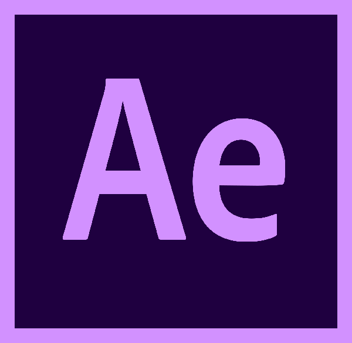
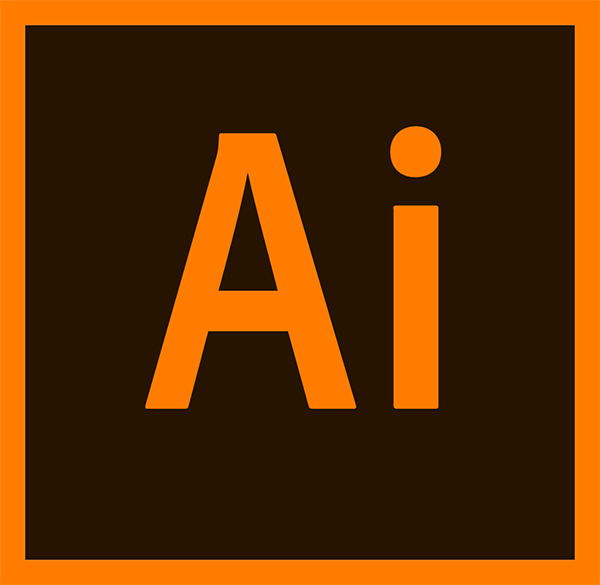
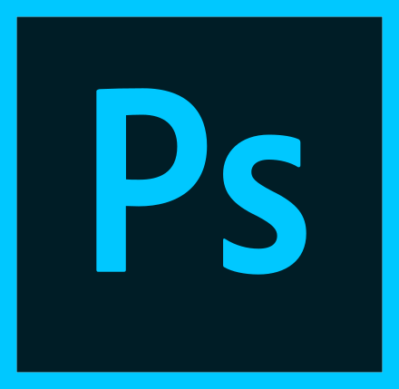
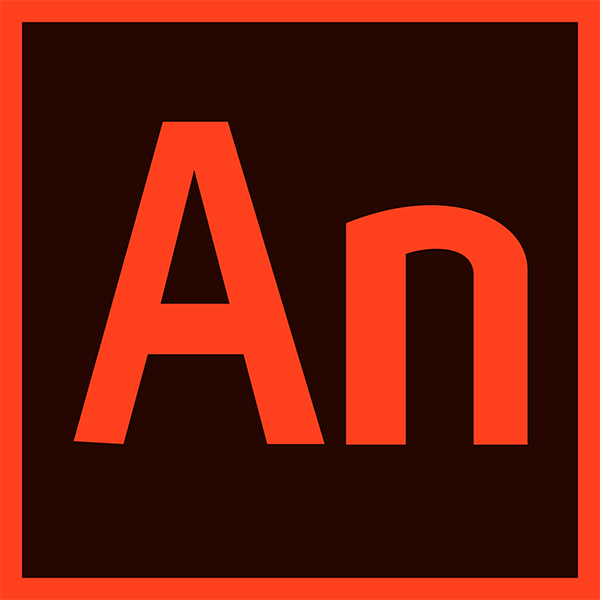
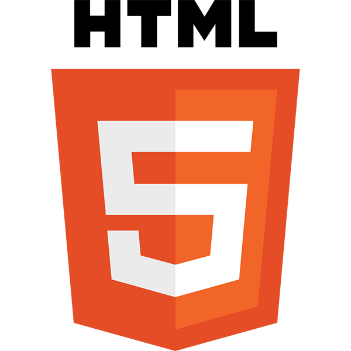
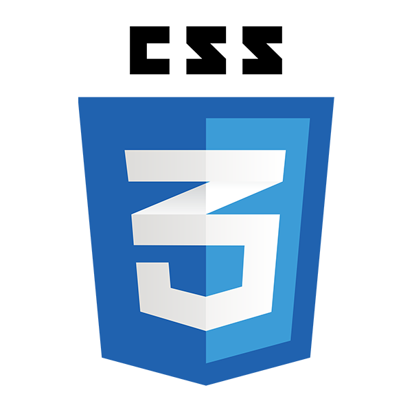

Hello! Je ne suis pas un bon astronaute mais je suis un jeune designer graphique! J’ai étudié le design à l’ECV de Bordeaux où je me suis spécialisé en design interactif. Je suis passionné d’illustration,
de motion design et de création d’identité visuelle. Mon travail
se démarque par l’association de ma créativité et d’une bonne
maîtrise technique.
-
Hello! I’m not a good astronaut but I’m a young graphic designer! I studied design at ECV in Bordeaux where I specialized in interactive design. I’m passionate about illustration, motion design and visual identity. My work stands out by the combination of my creativity and a good technical mastery.
2011-2014 - Baccalauréat scientifique
Lycée Laure Gatet - Périgueux
2014-2019 - Étudiant à l’ECV
École de Communication Visuelle de Bordeaux
- 
- 
- 
- 

- 
- 

2016 - Stage en entreprise
Imprimerie IOTA - P.A.O. - Saint-Astier
2017 - Stage en entreprise
Association Solinum - Réalisation d’une charte graphique et
d’un site internet - Bordeaux
2018 - Stage en entreprise
Ataqana & SQAL - Réalisation d’identités visuelles et de vidéos en motion design - Bordeaux
Vendredi 30 Mars 2018 - Coaching de lycéens
Bénévole lors de la journée Innov’EPA, j’ai aidé des lycéens à
construire un projet, en faire la communication et le présenter
devant un jury
2014-2018 - Équipe Com’
Membre de l’équipe de communication de l’école, je l'ai représenté
lors des journées portes ouvertes et des salons
2016-2018 - BDE
Membre du Bureau Des Étudiants 2 ans de suite
Diplômes
- Qualifications
2014 - Baccalauréat Scientifique
2019 - Diplôme Niveau 1 - Master
"Directeur Artistique en Communication Visuelle et Multimédia"
Spécialisé en Design Interactif - Mention "Bien"
Premier prix d’un concours d’illustration
Le concours avait pour thème "la musique", l’illustration a été
tirée en affiches et sérigraphiée sur différents supports
Réalisation du logo de la Cour d’Appel de Bordeaux
Réalisation de l’identité visuelle de Tryo
Premier prix de la campagne globale en fin de 3e année, le
projet d’identité visuelle fut récompensé par le groupe
Wine&Me
À la fin de l’hackathon organisé par l’ECV Digital, notre
projet a décroché le prix du meilleur projet webmarketing
et nous a permis d’arriver en demi-finale de la
Morpheus Cup à Paris


 Back to Top
Back to Top